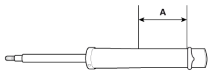

Repair Procedures: Inspection: Disposal
WARNING: This page is about a different variant/trim than selected.
- Fully extend the shock absorber rod.
- Drill a hole to remove gas from the cylinder (A).
 Courtesy of HYUNDAI MOTOR AMERICA
|
CAUTION:
- The gases emitted are colorless, odorless, and harmless.
- Be careful when drilling, as the drill chip may be blown.